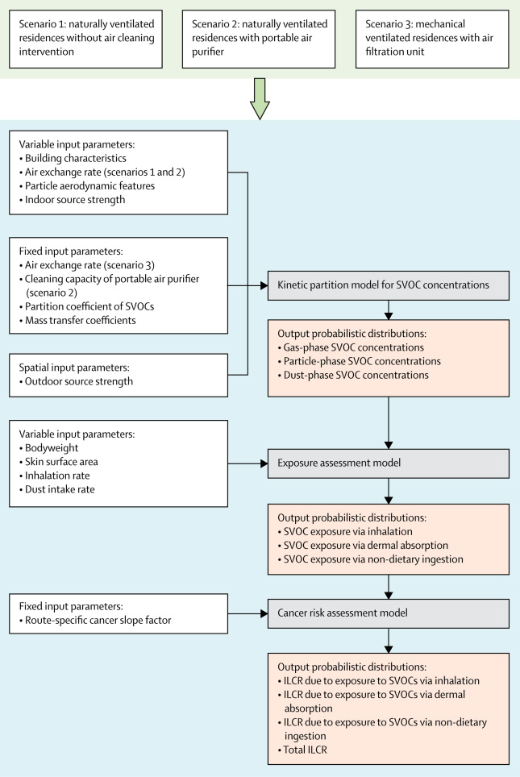
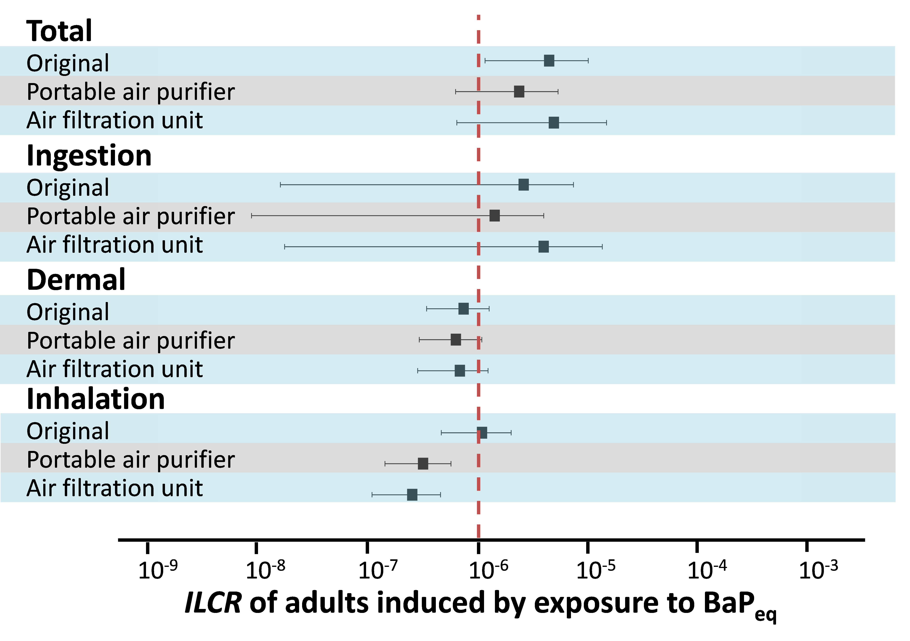
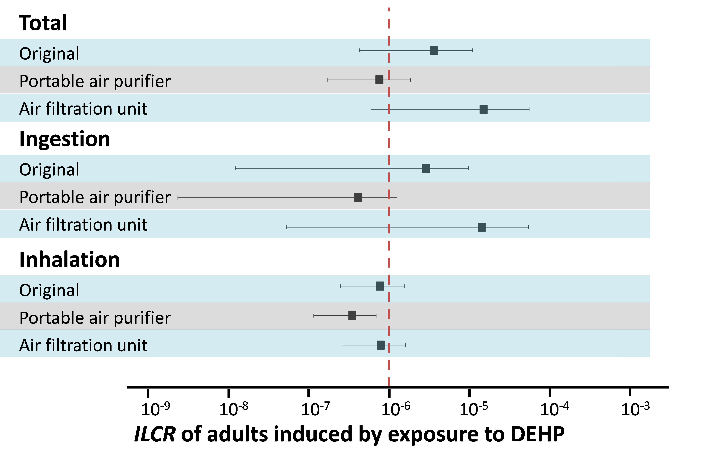

绿色建筑与城市环境国际研究中心
International Research Center for
G
reen
B
uildings &
U
rban
E
nvironment
当前位置：首页 > 学术动态 > 学术会议
助理研究员施珊珊在《柳叶刀-行星健康》发文剖析空气净化模式对室内半挥发有机化合污染物致癌风险的影响
发布时间：2018年12月05日
12月5日，我院助理研究员施珊珊与清华大学建筑学院教授赵彬、美国杜克大学环境学院教授张军锋（Junfeng (Jim) Zhang）合作的研究文章（Research Article）在国际著名期刊《柳叶刀》子刊：《柳叶刀-行星健康》发表。该文剖析了空气净化模式对室内半挥发有机化合物（SVOC）致癌风险的影响。这也是我校首次作为第一作者单位在此期刊发表研究论文。
SVOC是一类常见的室内污染物，挥发性较弱，在室内环境中除以气相形式存在以外，还会吸附在悬浮颗粒物、降尘及家具表面上。一些SVOC能引发人体的呼吸道疾病、生殖系统障碍甚至癌症。常用的室内空气净化模式（家用空气净化器和具有空气净化功能的新风系统）可有效去除颗粒相SVOC，但多相存在的SVOC之间存在动态分配过程，不同空气净化手段对于室内多相存在的SVOC及其引起的总体癌症风险的影响仍不清晰。
该研究以八种具有致癌风险的SVOC（七种多环芳烃及邻苯二甲酸二（2-乙基）己酯）作为目标污染物，基于赵彬教授课题组建立的室内SVOC多相浓度模型、人员多相暴露模型，通过实验、调研获取通风净化模式相关参数，利用蒙特卡罗法模拟获得了北京市非吸烟成年人口在以下三种通风净化模式下由目标SVOC所引起的癌症风险增量：1）自然通风住宅无空气净化措施；2）自然通风住宅使用家用净化器；3）机械通风住宅装载具有空气净化功能的新风系统。研究方法如下图所示：

研究发现，在不使用任何空气净化手段的自然通风住宅中，约有97%及76%的目标人口对应暴露于BaPeq（等效苯并芘）和DEHP（邻苯二甲酸二（2-乙基）己酯）的癌症风险增量超过10-6（美国环保局规定限值，超过此限值说明致癌风险不可忽略）。在使用了家用空气净化器的自然通风住宅中，约有80%及25%的目标人口对应暴露于BaPeq和DEHP的癌症风险增量超过10-6的限值。在装载了具有空气净化功能的新风系统住宅中，约有84%和87%的目标人口对应暴露于BaPeq和DEHP的癌症风险增量超过10-6的限值。

不同通风净化模式下目标SVOC对应癌症风险的增量
这样的研究结果意味着自然通风住宅中的家用空气净化器可以有效降低目标SVOC的致癌风险；而具有空气净化功能的新风系统，与自然通风住宅中的家用空气净化器相比，由于长期平均换气量较小，非但未能有效降低BaPeq相关的癌症风险，甚至增大了与DEHP相关的癌症风险。因此，在住宅中大规模装载具有空气净化功能新风系统的必要性仍需要慎重评估，能够降低多相存在SVOC浓度的有效空气净化策略仍需进一步探索。
施珊珊博士为本文第一作者，赵彬教授为本文通讯作者，张军锋教授为重要共同作者。该研究得到国家科技部十三五重大科技支撑计划项目、国家自然科学基金委创新群体项目资助。《柳叶刀》为医学领域顶级期刊，针对不同研究方向旗下拥有13个子刊，已有子刊2017年影响因子范围为10.7-36.4。《柳叶刀-行星健康》2016年创办的新子刊，致力于出版高质量的原创研究论文、社论和评论等，旨在研究人类生活和自然环境中健康及其影响因素之间的相互作用。
@Copyright2019 南京大学绿色建筑与城市环境国际研究中心 地址:江苏省南京市汉口路22号南京大学鼓楼校区
友情链接： 南京大学； 南京大学研究生院； 南京大学建筑与城市规划学院